Omnissa Horizon 8: Cloud Pod Architecture
Navigation
This article applies to all Horizon versions 2006 (8.0) and newer.
- Change Log
- Planning
- Initialize First Pod
- Additional Pods – Join Federation
- Global Entitlements
- Monitoring
- Home Sites
Change Log
- 2023 Oct 28 - Global Entitlements - Session Distribution Policy based on Load Index in Horizon 2309 (8.11)
- 2023 July 8 - Global Entitlements - Session Distribution Policy based on Session Count in Horizon 2306 (8.10)
- 2023 May 17 - added RPC ports from Omnissa 1027217 VMware Horizon ports and network connectivity requirements. (h/t Russ W)
- 2021 Jan 10 - updated screenshots for Horizon 2012 (8.1)
- 2020 Aug 14 - updated entire article for Horizon 2006 (8.0)
Planning
Cloud Pod Architecture lets you publish a single icon that load balances connections across multiple pools in multiple pods in multiple sites (datacenters).
-
Global Entitlements - Entitlements are the same thing as published icons. When you create an entitlement (local or global), you are publishing an icon from a pool.
- For local entitlement, the icon is only published from one pool.
- For global entitlement, the icon can be published from multiple pools. The pools can be in one pod or from multiple pods.
- Don’t configure both global and local entitlements for the same pool.
- A single pool can only belong to one global entitlement.
- For applications, only one application per global entitlement.
-
Pod Federation - Global entitlements can't be created until a Pod Federation is created. This federation could be one pod or multiple pods.
-
The pods can be separated into sites. Each site can contain multiple pods.
-
Global Load Balancing - Use NetScaler GSLB or F5 GTM to connect Horizon Clients to a globally available Horizon Connection Server. The connected Horizon Connection Server then uses Global Entitlements to select a site/pod/pool.
-
When a user launches a Global Entitlement, the Connection Server selects a pod based on the Global Entitlement Scoping, which can be All Sites, Within site, or Within Pod. This is from the perspective of the Connection Server the user is currently connected to. Horizon will prefer the local pod if possible.
- Users or groups can be assigned to Home Sites. Global Entitlements can be configured to prefer Home Sites over the normal site/pod selection criteria.
- Dedicated Assignment - For Dedicated Assignment pools, global entitlement only helps with the initial connection. Once the user is assigned to a desktop then that desktop is always selected. Users are not automatically provided with a desktop from another site if the site containing their dedicated desktop has gone down. The desktop request will fail because the dedicated desktop isn't available. The administrator could configure a separate Global Entitlement for the users to provide a floating desktop until such time the original site recovers. That floating entitlement should be arranged to deliver desktops from other sites as required.
- Firewall Ports - The Horizon Connection Servers participating in Cloud Pod Architecture communicate with each other over TCP 135, TCP 22389, TCP 22636, and TCP 8472. Make sure these ports are open. More info at Ray Heffer VMware Horizon 7.4 Network Ports for Cloud Pod Architecture.
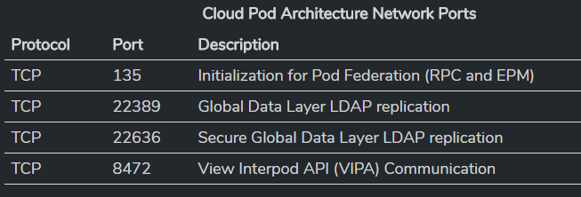
- Also open the dynamic RPC ports, which default to port range of 49152 through 65535. See Omnissa 1027217 VMware Horizon ports and network connectivity requirements.
- RBAC - Horizon Console includes a new administrator privilege: Manage Global Sessions. The regular Administrators role has access to multiple pods. The new Local Administrators role can only manage the local pod.
Cloud Pod Architecture Topology Limits Horizon 8 at Omnissa Docs:
- Max users = 250,000
- Max Pods = 50
- Max Sessions per Pod = 12,000
- Max Sites = 15
- Max Connection Servers per Pod = 7
- Max Horizon Connection Server Instances = 350
Traffic flow (Rob Beekmans – VMware Horizon View Cloud Pod - unwanted routing?):
- Use F5 GTM or NetScaler GSLB to connect users to a Horizon Connection Server in any pod. If active/active, use proximity load balancing to control which pod is initially accessed.
- The Horizon Connection Server looks up the Global Entitlements to determine the destination pod for the Pool.
- User’s PCoIP session goes through the initially connected Horizon Connection Server and across the DCI (Datacenter Interconnect) circuit to the remote pod. There’s no way to re-route Blast/PCoIP through a Horizon Connection Server in the remote pod. In fact, the Horizon Connection Servers in the remote pod are never accessed. You need sufficient DCI bandwidth to handle this Blast/PCoIP traffic.
- Note: Horizon Cloud Universal Broker doesn't have this problem.
For more information on multi-datacenter design for Horizon, see Workspace ONE and Horizon Reference Architecture, which includes the following:
- Omnissa Access
- App Volumes
- Horizon Cloud Pod Architecture
- Dynamic Environment Manager
- SQL AlwaysOn Availability Groups
- Networking
- Storage (e.g., vSAN)
- Active Directory
- Distributed File System
- Global Load Balancing
Initialize First Pod
- In Horizon Console, expand Settings and click Cloud Pod Architecture.
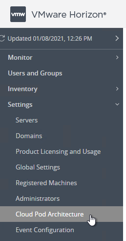
- On the right, click Initialize the Cloud Pod Architecture feature.
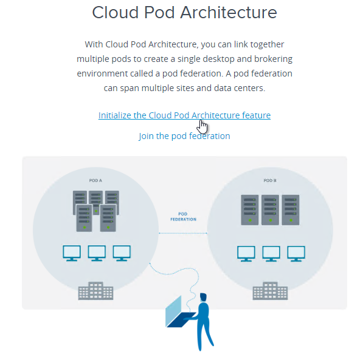
- Click OK to initialize.
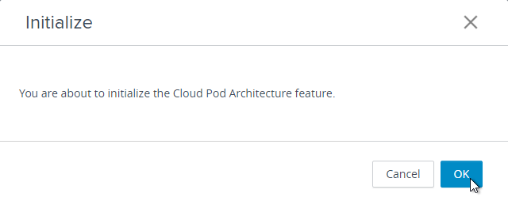
- A status page is displayed.
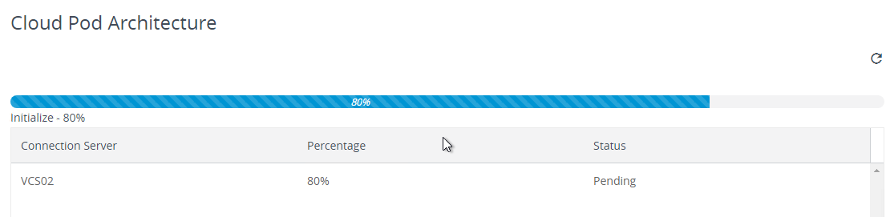
- On the right, feel free to rename the federation by clicking the Edit button. This is the Federation, not the Pod.
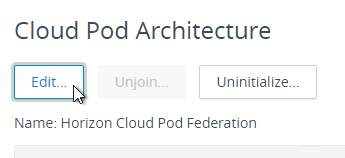
- Enter a new name.
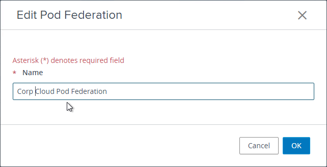
- Enter a new name.
- On the left, expand Settings, and click Sites.
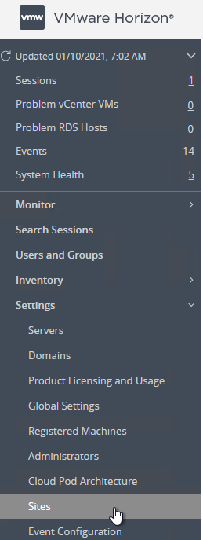
- On the right, in the top half, highlight the first site, and then click the Edit button to rename the Default First Site to be more descriptive. Sites can contain multiple pods. Site is typically a geo location or data center.
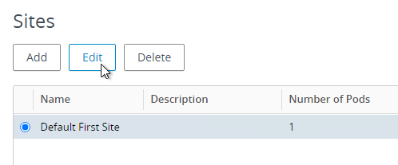
- Enter a Site name.

- Site URL is a feature in 2406 and newer. It lets you specify a datacenter-specific FQDN that Blast is redirected to when Cloud Pod Architecture chooses a Horizon Agent machine in that site. This avoids sending the Blast connection across the datacenter interconnect. UAG 2406 and newer supports the feature.
- Enter a Site name.
- Click the Site to highlight it to reveal the Pods on the bottom half of the window.
- Highlight the pod on the bottom and click Edit to make the name more descriptive.

- Enter a Pod name.
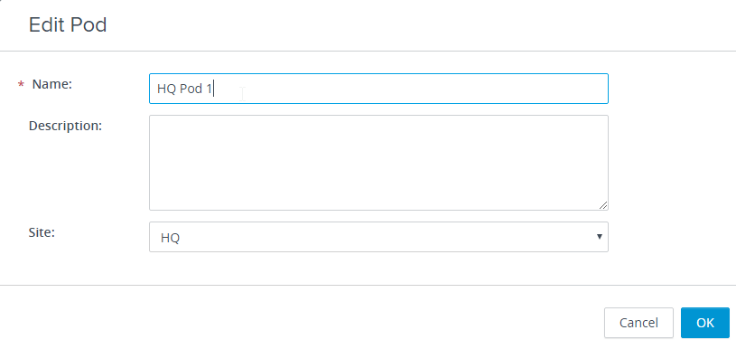
- Enter a Pod name.
- See Omnissa 2080522 Restoring View Connection Server instances in a Cloud Pod Architecture pod federation.
Additional Pods – Join Federation
- Connect to Horizon Console in the second pod.
- On the left, expand Settings, and click Cloud Pod Architecture.
- On the right, click Join the pod federation.
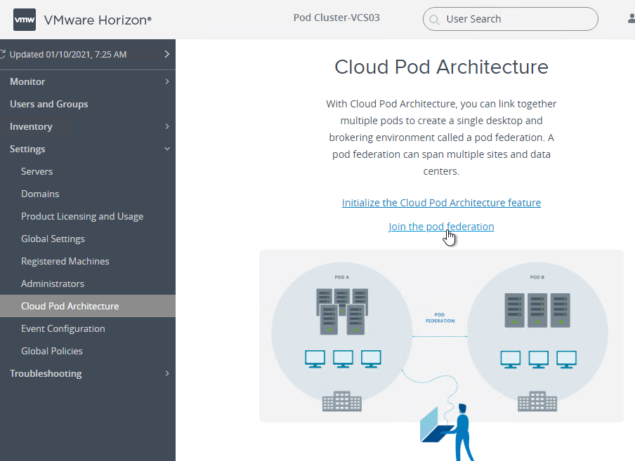
- Enter the name of an existing Horizon Connection Server that is already joined to the federation.
- Enter credentials and click OK.
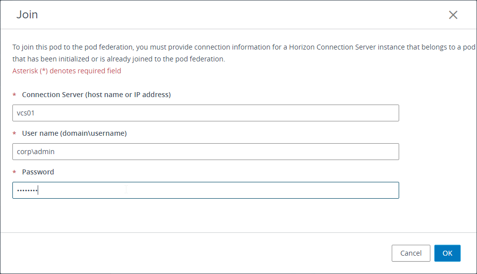
- The Join status is displayed.
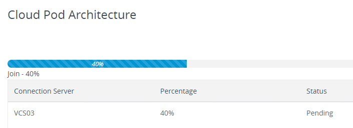
- On the left, expand Settings, and click Sites.
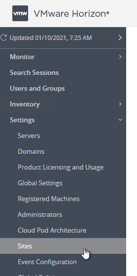
- If this pod is in a different site, then in the top half of the window click Add to create a new site.

- Give the site a name and click OK.

- Site URL is a feature in 2406 and newer. It lets you specify a datacenter-specific FQDN that Blast is redirected to when Cloud Pod Architecture chooses a Horizon Agent machine in that site. This avoids sending the Blast connection across the datacenter interconnect. UAG 2406 and newer supports the feature.
- Highlight the first site.
- On the bottom, highlight the new pod, and click Edit.

- Rename the pod and put it in the 2nd site. Click OK.

- The top of Horizon Console shows you which Pod you are administering. You might have to refresh the page to see the correct Pod name after it was renamed.
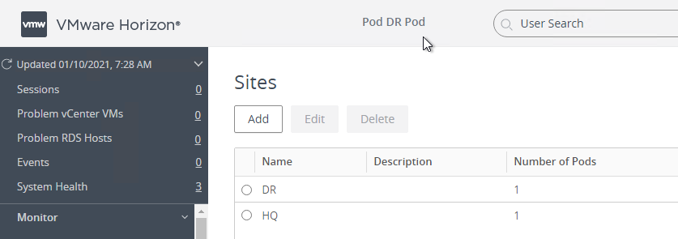
Global Entitlements
Global Entitlements contain one or more Local Pools from one or more pods. Connections to the Global Entitlement can be load balanced across the member pods and pools.
Do not create both Global Entitlements and Local Entitlements for the same pool otherwise users might see two icons. Create the local pool, but don't entitle it (i.e. don't assign users). Instead, create a Global Entitlement and add the local pool to it.
- Before creating a Global Entitlement go to Inventory > Desktops or Inventory > Applications, click a pool name, scroll down to the Pool Settings section and record the settings. Your Global Entitlement must have the same settings.
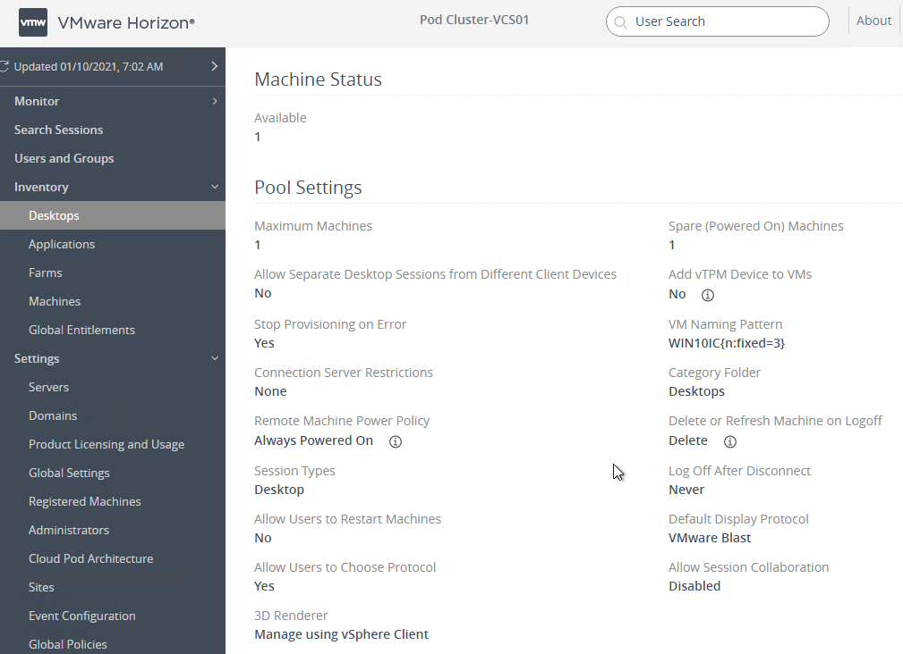
- In Horizon Console, on the left, expand Inventory, and click Global Entitlements.
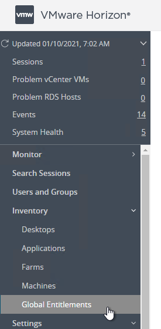
- On the right, click Add.
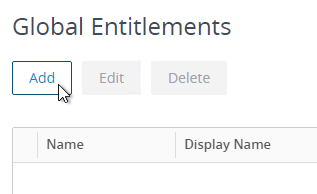
- In the Type page, select Desktop Entitlement or Application Entitlement, and click Next.
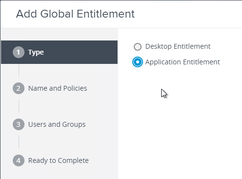
-
In the Name and Policies page, give the entitlement (icon) a name. For Application Entitlements, it’s one Global Entitlement per application so include the application name.
- Horizon 2006 and newer can specify a Display Name that is different than the name of the entitlement.
- Horizon 2103 and newer can set a Federation Access Group to restrict administrator access to this Global Entitlement. You can create Federation Access Groups in the Horizon Console at Settings > Administrators, and on the right is a tab named Federation Access Groups. You can edit the Global Entitlement later to specify a Federation Access Group.
- Scroll down.
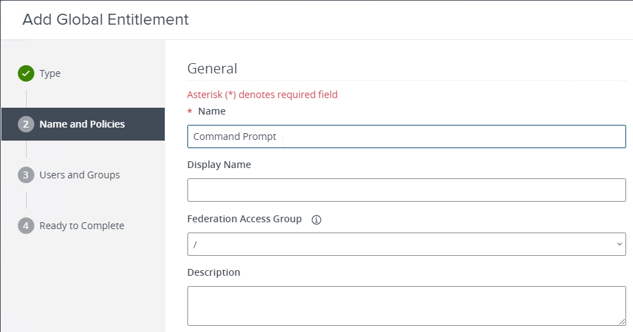
-
Scroll down for more settings:
-
You can configure tag restrictions (Connection Server restrictions) from this wizard.
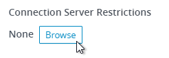
- You can select a Category Folder where the published icon will be placed on the client's Start Menu or Desktop. This feature requires Horizon Client 4.6 and newer.
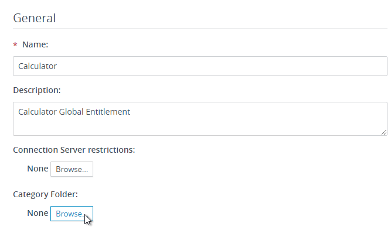
- Configure Category Folder. You can type in a new folder or select an existing one. Specify whether the shortcut should appear on the Start Menu, Desktop, or both.
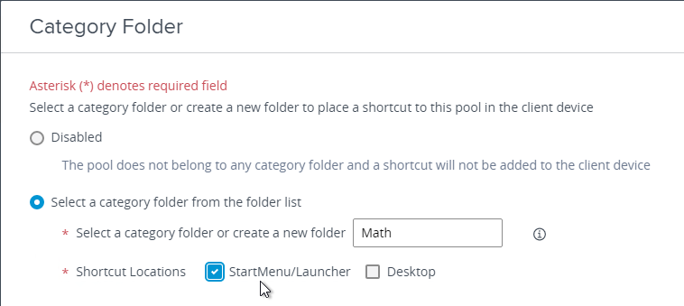
-
Scroll down to the Policies section and configure the following. Note: these settings must match the Local Pool or you won't be able to add the Local Pool to the Global Entitlement. Some of these settings can't be changed without deleting the Global Entitlement and recreating it.
-
For Desktop Entitlements, the User Assignment field (Floating or Dedicated) must match the Local Pools.
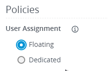
- Scope determines from which which site/pod the Local Pool is selected. Users connect to a specific Connection Server. Scope specifies if the Local Pool can be selected from any any pod in any site, from any pod in the same site as the Connection Server that the user connected to, or from the same pod as the Connection Server that the user connected to. For Dedicated Assignment pools, the user always connects to the assigned desktop no matter which Connection Server the user initially connected to.
- The Use home site checkbox tells the global entitlement to respect user home sites. When you assign a user to a home site, when the user launches the global entitlement, it tries to find a Local Pod in the same site as the user's home site. This helps keep the user's session close to the user's data (e.g. home directory, roaming profile).
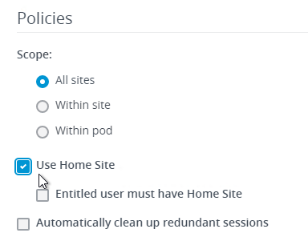
- Change the Default display protocol to VMware Blast. These settings must match the Local Pools.
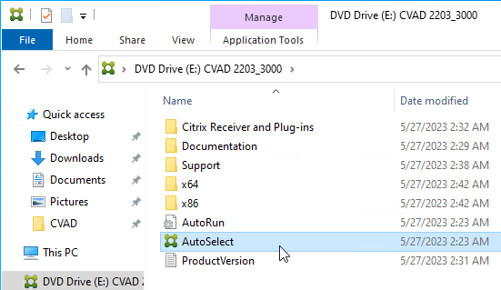
- Horizon 2306 (8.10) and newer have a Session Distribution Policy to distribute sessions across the local resources in the Global Entitlement. Horizon 2309 (8.11) supports either Session Count or Load Index.

- For Desktop entitlements, you can allow users to Restart their machines or use Session Collaboration, or initiate separate sessions from different client devices. These settings must match the Local Pools.
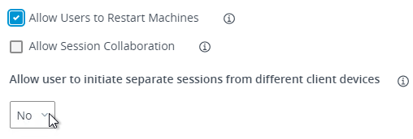
- For Application entitlements, there's a Pre-launch checkbox. If you need the Pre-launch feature, then enable the Pre-launch checkbox on at least one application, and entitle the application to the users that need the Pre-launch feature. These settings must match the Local Pools.
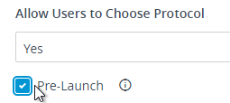
-
There's a checkbox named Client Restrictions. When this is enabled, you can add Client Computer Accounts to an AD Group and entitle the published icon to that computer AD group. The published icon can then only be accessed from the client computers in the AD group.
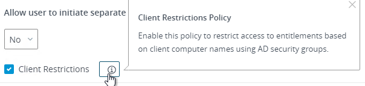
Notes:- Windows clients only. If the this feature is enabled, then all non-Windows clients are blocked.
- Horizon Client 4.6 and newer. All other versions are blocked.
- The Active Directory security group containing client computers must be in the default Computer container.
- See Implementing Client Restrictions for Desktop Pools, Published Desktops, and Application Pools at Omnissa Docs.
- For Application Entitlements, there's a selection for Multi-Session Mode. Pre-launch must be disabled to enable this setting.
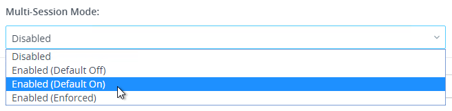
- Make other selections.
- For Application Entitlements, there's a selection for Multi-Session Mode. Pre-launch must be disabled to enable this setting.
- Click Next when done.
- In the Users and Groups page, add users that can see the icon associated with the Global Entitlement. Click Next.
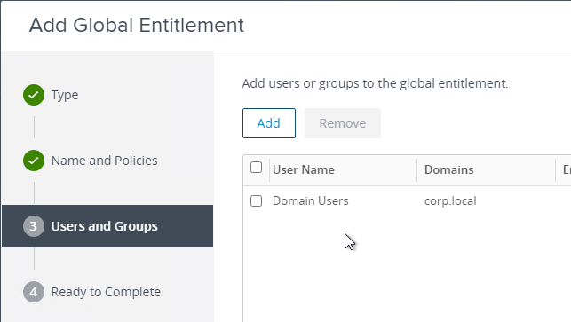
- In the Ready to Complete page, click Finish.
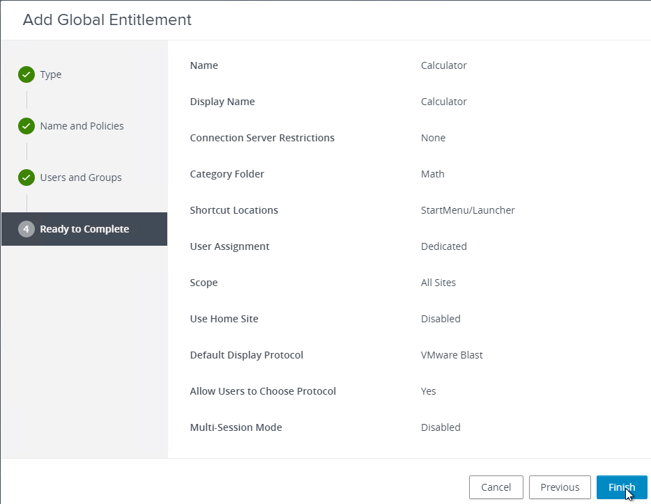
- Global Entitlements won't work until you add some Local Pools to it. Make sure your Horizon Console is connected to the Pod that has the Local Pool.
- On the left, expand Inventory and click Global Entitlements.
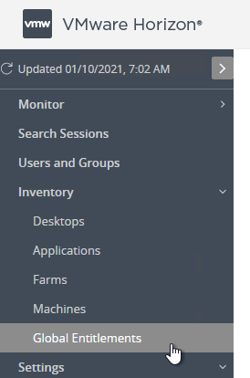
- On the right, click the link for the name of the Global Entitlement. Global Entitlements are synced to every pod.
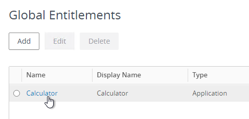
- Switch to the Local Pools tab and click Add.
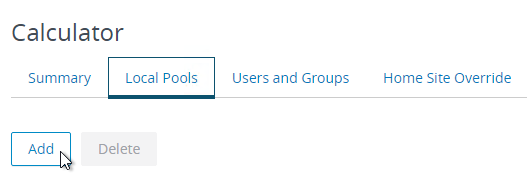
- Select the local pools you want to add and click Add. Remember, only add one app per Global Entitlement. Also, you can only add pools from the local pod. To add pools from a different pod, you must point your Horizon Console browser to the other pod and edit the Global Entitlement from there.
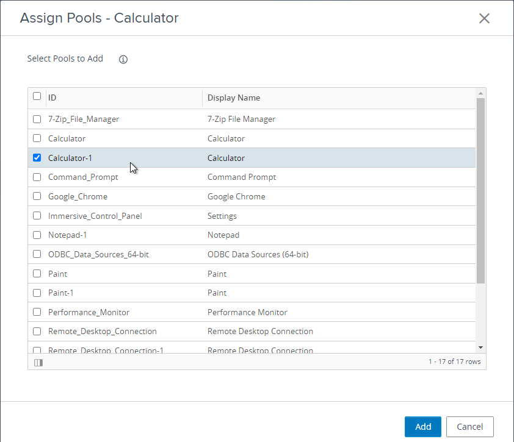
- If the GUI won't let you add the local pool then try it from the command line to see the actual problem. lmvutil parameter names are case sensitive. Some settings can only be changed by deleting the Global Entitlement and recreating it.
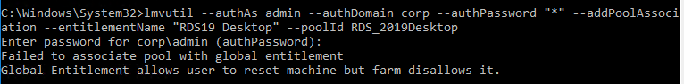
- Point your Horizon Console to another pod and view the Global Entitlements.
- On the right, click the hyperlink for the name of the Global Entitlement and follow the same procedure to add Local Pools. Horizon will automatically load balance user connections across all local pools based on the Scope policy (All Sites, Within Site, or Within Pod) in the Global Entitlement and Home Sites.
- A backup global entitlement delivers remote desktops or published applications when the primary global entitlement fails to start a session because of problems such as insufficient pool capacity or unavailable pods.
-
Create a new Global Entitlement containing the backup pools.
- The new Global Entitlement for backup should have the same settings as the production Global Entitlement.
- You don't have to assign anybody to the new Global Entitlement that will be the backup.
- Add Local Pools to the new Global Entitlement that will be the backup for when prod is down.
- Edit the production Global Entitlement.
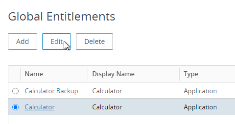
- Scroll down to Backup Global Entitlement and click Browse.
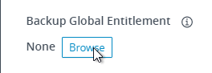
- Change the selection to Backup Global Entitlement, select the Global Entitlement that will backup this one. Click Submit.
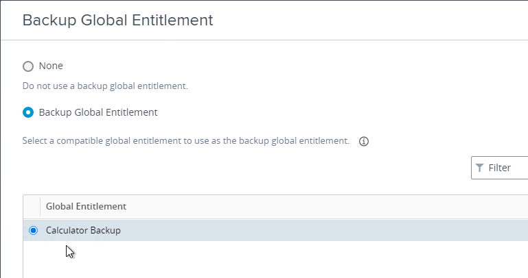
- Horizon Console, at Inventory > Desktops can show if a Local Pool is a member of a Global Entitlement. Scroll to the right to see the Global Entitlement column. This column doesn't seem to be visible for Applications.
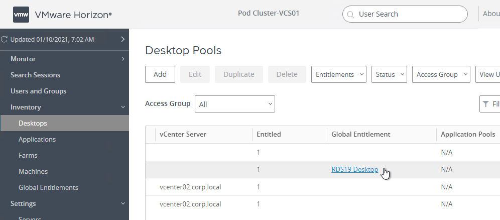
Monitoring
- Once Global Entitlements are enabled, a new Search Sessions node is added, which allows you to search for sessions across federated pods. Brokering Pod is the pod containing the Connection Sever that the user initially connected to to get the list of icons as opposed to the pod that contains the Local Pool that the session is actually launched from.
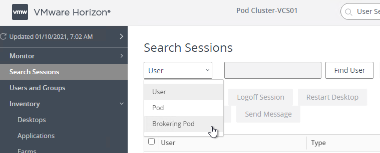
- The Monitor > Dashboard in Horizon Console shows the health of remote pods.
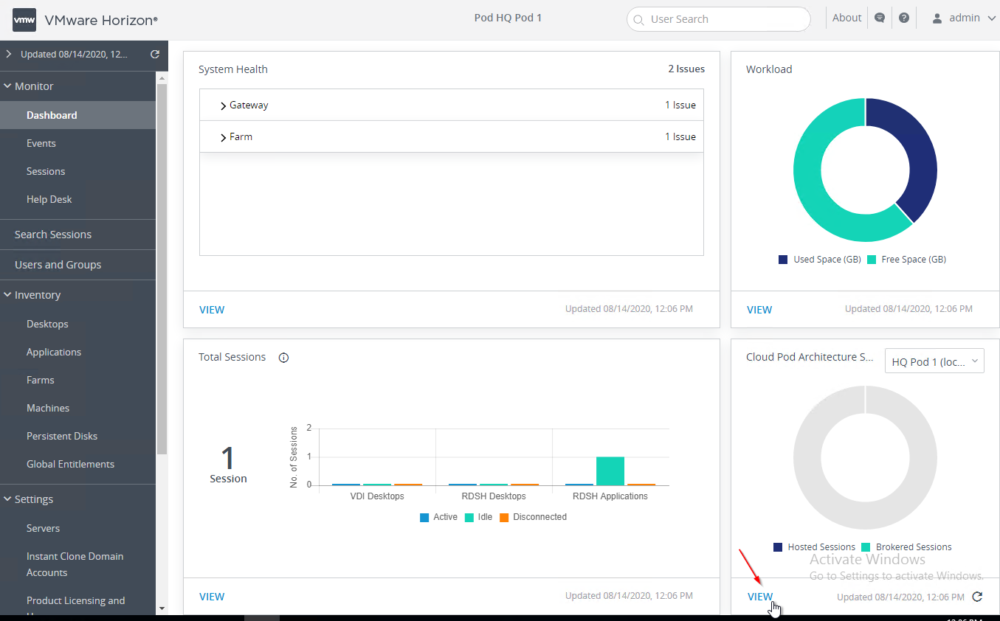
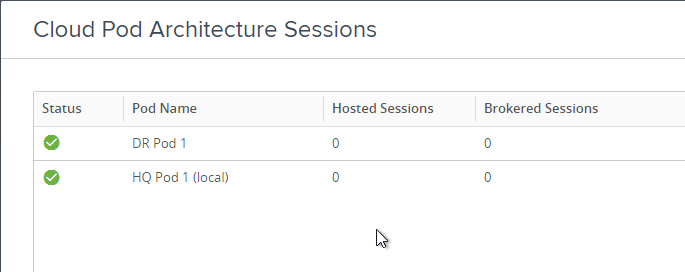
Home Sites
The Home Sites feature causes Global Entitlements to prefer local pools in the user's Home Site before looking for pools in remote sites.
- Configure your Cloud Pod Architecture with multiple Sites and at least one Pod per Site.
- In Horizon Console, on the left, click Users and Groups.
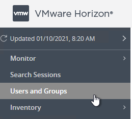
- On the right, switch to the Home Site Assignment tab and click Add.
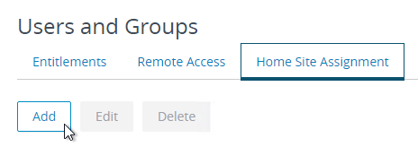
- Find a user or group for this home site, and click Next.
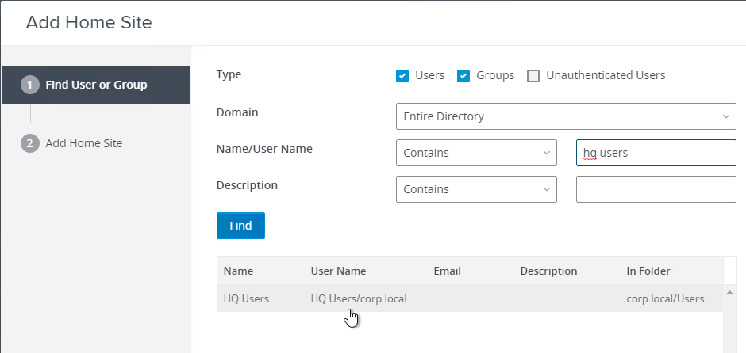
- Select the site to assign the users to and click Finish. This list of sites comes from your Cloud Pod Sites configuration.
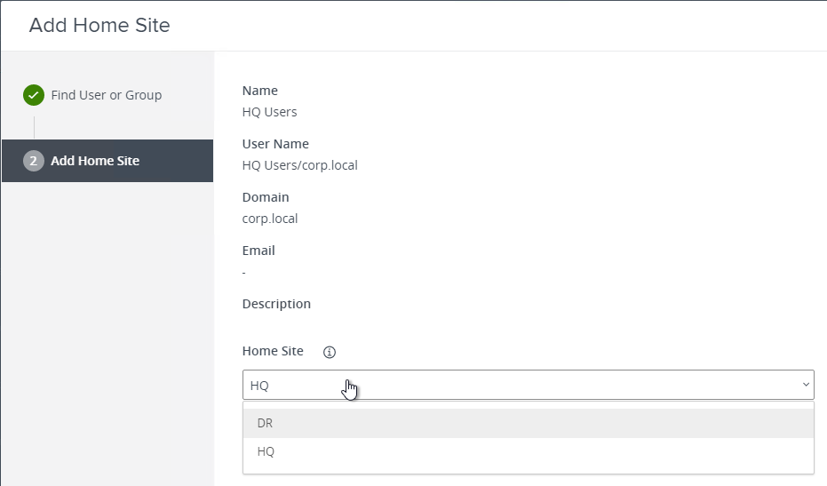
- Home Sites can be assigned to both users and groups. User assignments override group assignments.
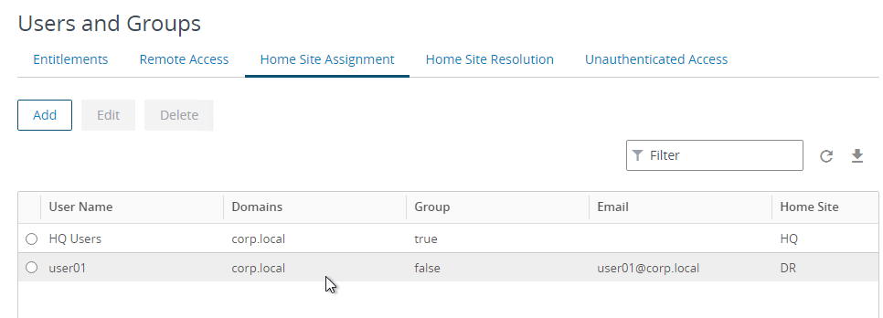
- Edit your Global Entitlement and ensure that Use Home Site is checked. You can optionally require that each user has a Home Site.
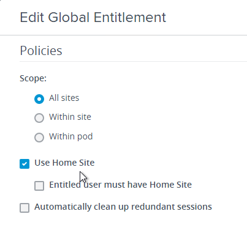
-
Each Global Entitlement can have its own Home Site configuration that overrides the global Home Site configuration.
- In Horizon Console, click the hyperlink for the Global Entitlement's name, switch to the tab named Home Site Override, and then click Add.
-
Since you could have a combination of default Home Site for user, default Home Site for group, and Global Entitlement-specific Home Sites, it's helpful to know which Home Site is effective for each user and Entitlement.
-
In Horizon Console, in the Users and Groups node, switch to the Home Site Resolution tab. Find a user, and it will show you the Home Site Resolution for a specific Global Entitlement.
- In Horizon Console, click the hyperlink for the Global Entitlement's name, switch to the tab named Home Site Override, and then click Add.
Related Pages
- Back to Omnissa Horizon 8